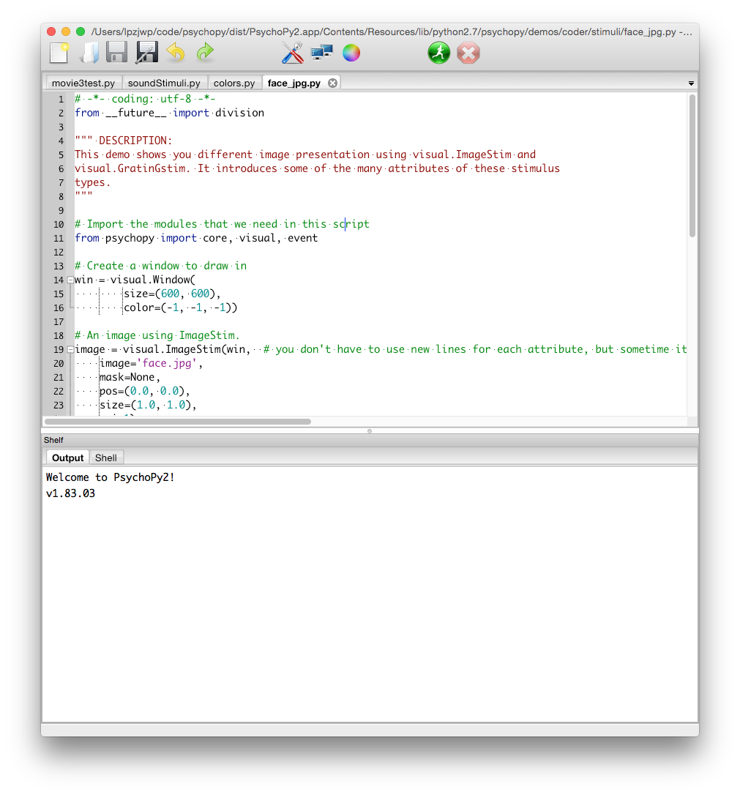

About me
- Jon Peirce:
- Vision scientist at University of Nottingham, UK
- Principal creator/maintainer of PsychoPy
- Credits:
- Many other people have contributed to the PsychoPy project (Jeremy Gray, Mike MacAskill, Richard Höchenberger, Sol Simpson being the biggest contributors)
- Nottingham University have been paying my salary while PsychoPy was written
- Wellcome Trust gave us a grant to add online capabilities
- The Chan-Zuckerberg Initiative are funding further substantial improvements
About the workshop
Not aiming to teach you all of PsychoPy
Hopefully give you some ideas about what’s possible
Getting to know PsychoPy
What is PsychoPy?
It’s Psychology software in Python
PsychoPy is several things:
- a library for use in Python scripts
- an editor to write and run such scripts (the ‘Coder’ view)
- an application for building experiments through a graphical user interface (GUI) (the ‘Builder’ view)
It is itself entirely written in Python
Goal of PsychoPy
The aim is to enable scientists to run as wide a range of experiments as possible, as easily as possible, with standard computer hardware.
- A single piece of software:
- precise enough for psychophysics
- intuitive enough for undergraduate psychology
- flexible enough for everything else
- capable of running studies in the lab or online
Choice of interface
It’s hard to make something easy enough for undergrads and novices but flexible enough for everything else.
PsychoPy provides two main options, for programmers and non-programmers, but there are also ways to combine the two.
PsychoPy is written in the Python programming language
Choice of interface

The Coder view is used to create experiments from Python scripts
Choice of interface

The Builder view is used to create experiments visually
Why do people Code?
- To implement more complex experimental designs/procedures(?)
- To break out of the current trial structure
- To break out of the hardware drawing loop cycle
- To know exactly what the code is doing(?)
- To program things that aren’t psychology experiments. (e.g. stats, simulations, analyses etc.)
Why do people Build?
- It is far faster to develop experiments!
- You can still understand (and build on) your experiment next year
- You’ll probably have fewer bugs (and better performance)
- Code Components can be used in nearly all places where Builder isn’t enough
- Builder experiments can also compile to a web format (Javscript/HTML) to run online!
What does Jon do?
I use Builder on a regular basis.
My experiments are almost always created in Builder, with added Code Components. I don’t ever break out and switch to pure code.
Going further
Builder interface:
- Building Experiments in PsychoPy by Peirce and MacAskill (2018, Sage)
Python programming (for experimental psych):
- Programming Experiments in Python workshop (3 days of programming in Nottingham)
- Programming Visual Illusions for Everyone by Marco Bertamimi (2017, Springer)
- Python for Experimental Psychologists by Edwin Dalmaijer (2017, Routledge)
- Programming psychological experiments and data handling with Python/PsychoPy by Hiroyuki Sogo (2017, Asakura Shoten)
So, let’s go on and learn some Builder basics…